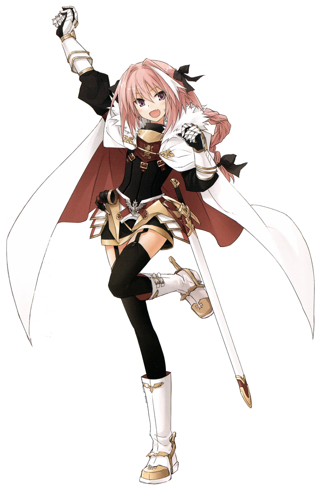
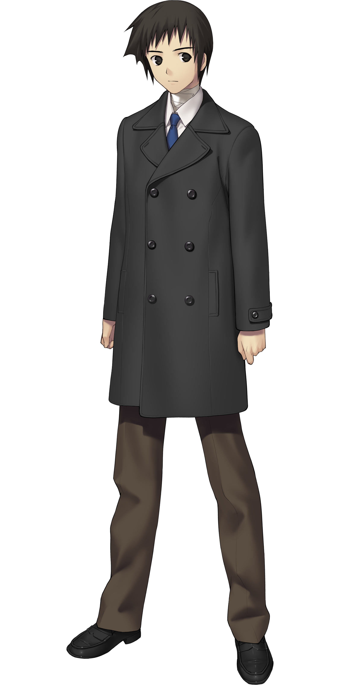
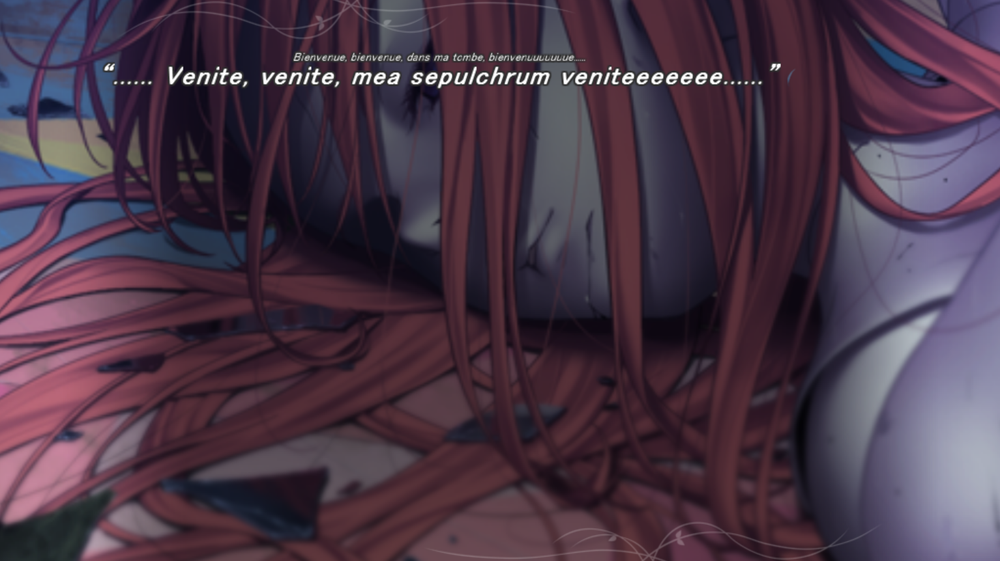
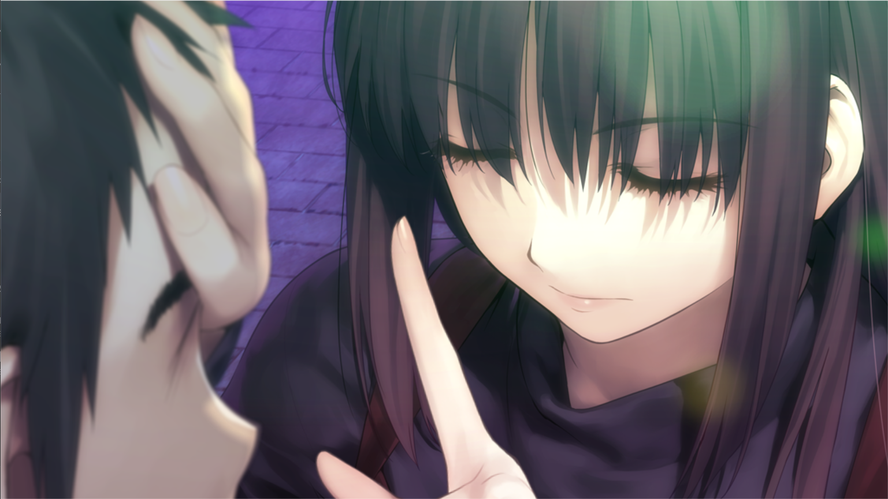
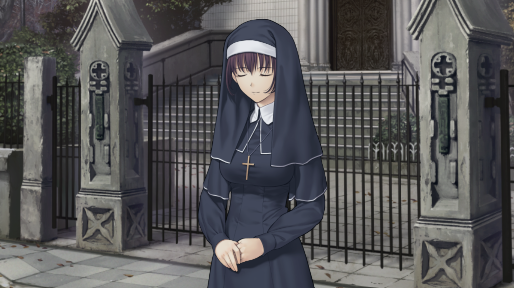

Mahoutsukai No Yoru (ou Witch On The Holy Night en anglais) est un
visual novel écrit et édité par Type-Moon en 2012.
C'est un prequel au
roman graphique "Tsukihime" (qui font tous deux partis du Nasuverse)
où l'on suit l'histoire d'Aoko Aozaki, une apprentie sorcière.

.png)
Ce visual novel se demarque des autres malgré son aspect kinétique. Notamment pour son histoire riche, sa direction artistique ainsi que ses soundtracks. Les combats en sont un bon exemple, qui sont par ailleurs très dynamiques pour un visual novel lambda.
CLIQUEZ ICI POUR VOIR UN COMBAT SUPER TUFF (no scam)
<
Aoko s'installe à la résidence des Kuonji après avoir été choisie comme héritière de la magie par son grand-père. Elle y rencontrera la supposée sorcière Alice Kuonji ainsi qu'un nouvel ami d'école : Shizuki. Y'aura des problèmes et de combats et shizuki et shizuki et shizuki shizuki et

OU ACHETER CE VISUAL NOVEL ? (Steam) .......ou alors @heelaxx sur discord et je vous passe le jeu gratuitement ;3
Galerie :



